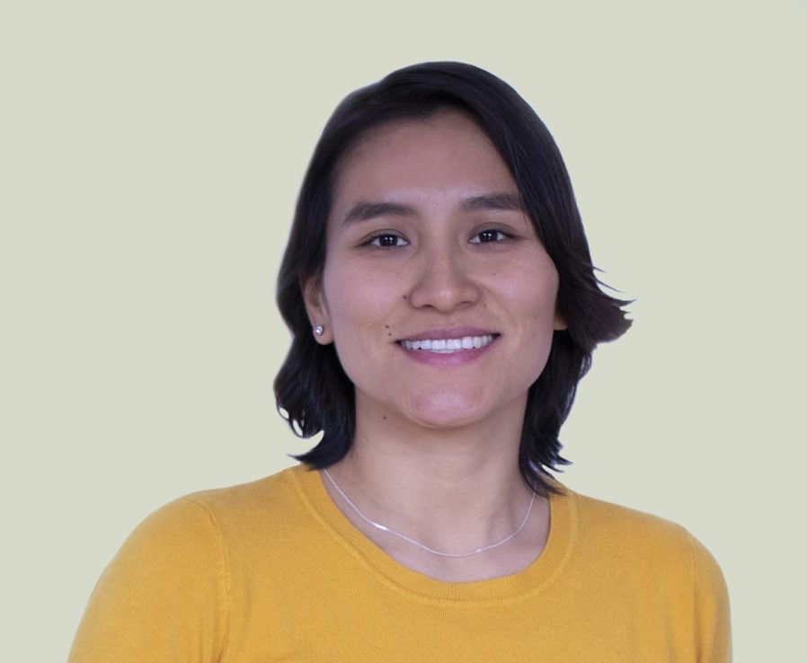

Comunicadora audiovisual con más de 10 años de experiencia en producción, dirección general y dirección de fotografía en imagen fija y en movimiento.
A lo largo de su trayectoria ha trabajado con empresas, marcas personales, instituciones educativas y organizaciones sociales, desarrollando piezas audiovisuales que combinan estrategia, sensibilidad y una propuesta estética cuidada.
Su trabajo se caracteriza por una mirada narrativa que conecta lo visual con el propósito del proyecto. No solo registra imágenes: construye relatos que comunican identidad, posicionamiento y transformación.
Paralelamente, se encuentra en formación como terapeuta (Gestalt, logoterapia y estudios sobre sistema nervioso), lo que ha fortalecido su capacidad para dirigir equipos, acompañar procesos creativos y generar espacios seguros durante las sesiones. Esta mirada humana atraviesa todo su trabajo.